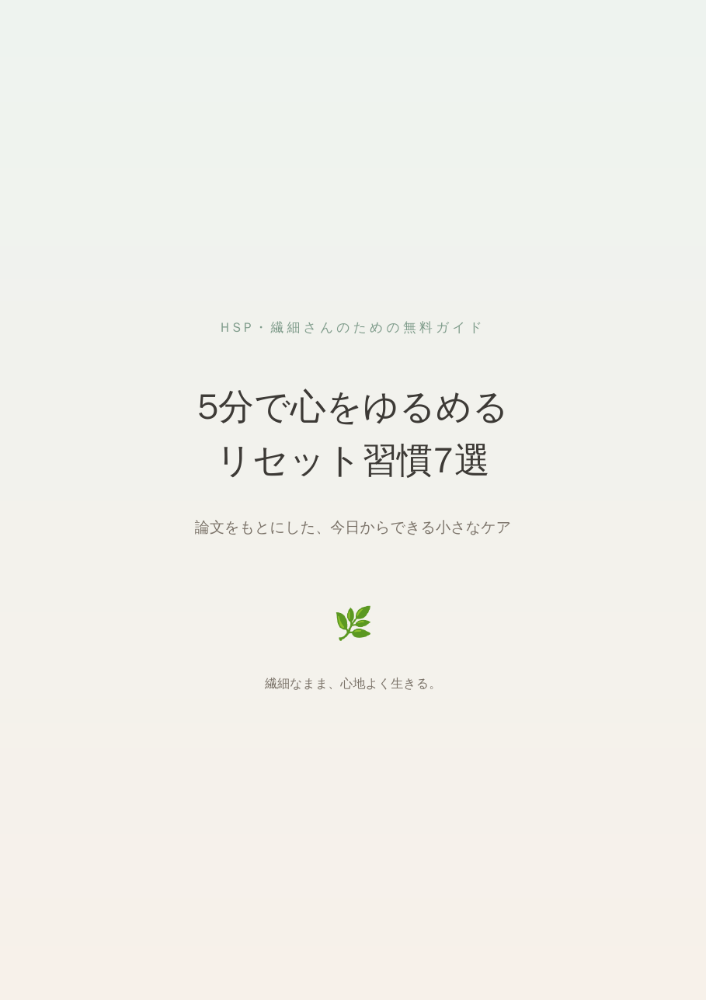

論文をもとにした、今日からできる小さなケア

LINEで無料で受け取る友だち追加ですぐに届きます登録は無料です。いつでもブロックできます。
繊細な楽器は、小さな音まで豊かに響く。
だからときどき、やさしく調律する。
少しずれた音を、自分の音に戻していく。
それが心のチューニングです。
すべて、研究で報告されている方法をもとにしています。
道具なし、5分以内でできるものだけを選びました。
わたしも、HSP気質の当事者です。30年ほど、感情があまり動かない時期がありました。
変わるきっかけは、優しい音に、少しだけ耳を向けてみたことでした。今も、疲れている日は、話し声や物音が大きく聞こえすぎてしまうことがあります。
Xでは「もの」として、論文をもとにした心のチューニングを毎日届けています。好きな時間は、ごほうびではなく、心を自分の音に戻すための時間。そのことを、いちばん伝えたいと思っています。